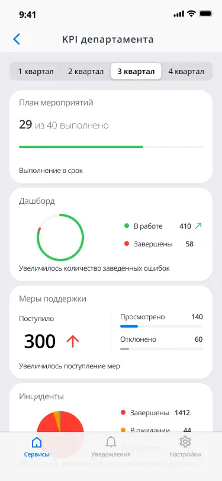
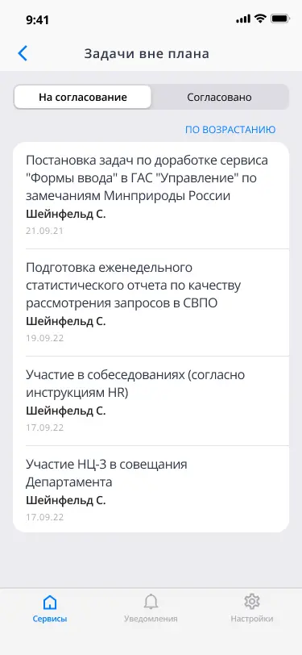
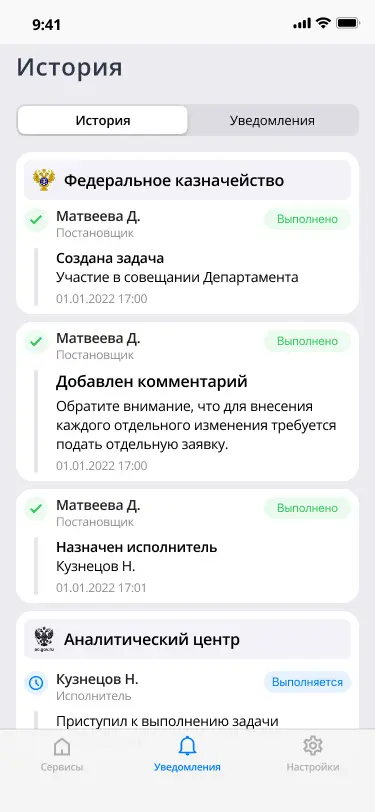
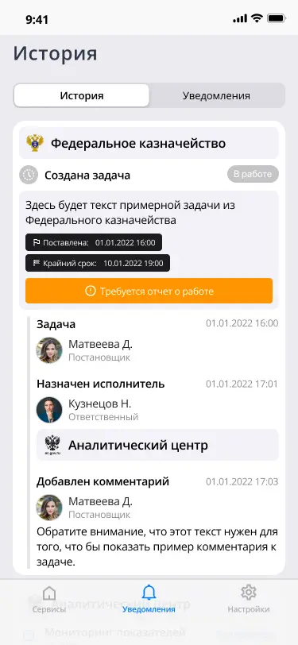
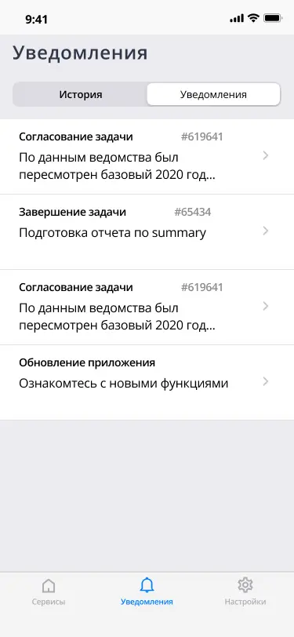
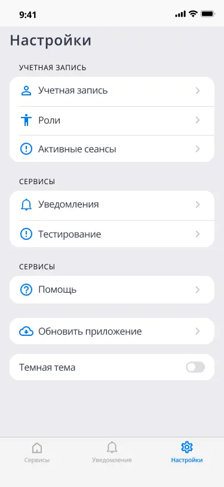

Контекст
Внутреннее веб-приложение для руководителей аналитического центра, предназначенное для мониторинга исполнения задач, назначенных аналитикам и другим исполнителям. Система позволяет отслеживать статусы задач, контролировать сроки выполнения и быстро переходить к деталям работы. Основная цель интерфейса — дать руководителям понятную картину текущего состояния задач и упростить контроль рабочих процессов.
Моя роль
- Сбор требований и аналитика. Проводил встречи с командой, уточнял цели продукта и потребности пользователей.
- Проектирование пользовательских сценариев. Разработал user flow в FigJam и сформировал логику работы интерфейса.
- Прототипирование. Создавал кликабельные прототипы и проводил итерации с заказчиком для уточнения требований.
- UI-дизайн. Разработал визуальный стиль интерфейса, собрал библиотеку компонентов и реализовал адаптивные экраны в Figma.
Решения
Отображает ключевые показатели исполнения задач и позволяет руководителю быстро оценить текущий статус и выявить проблемные зоны.
Детализированный список задач с фильтрами и возможностью перехода к карточке задачи для анализа исполнения.
Позволяет отслеживать действия участников и изменения статусов задач, повышая прозрачность рабочих процессов.
Система уведомлений помогает контролировать изменения статусов задач и своевременно реагировать на новые назначения или просрочки.
Интерфейсы





